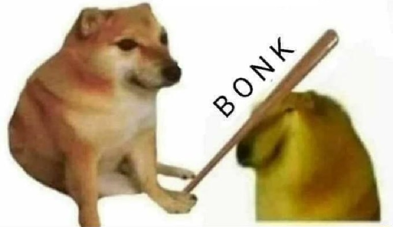

This website is to tell you that I was dumb, and I am sorry for all the things I've done
Us - naive but tough kids
Hi,
If you know me for a while, you know how I respond to my anger: I stay away from people,
ride my motorbike to the end of the city, go home, then release my thoughts to somebody
whom I think is willing to understand my mind. Well, I hate this.
Not just because this is a bad way to deal with anger,
I may have killed that somebody's mood that it happened to leave
a scar on that kid's mind and heart. That is why I choose to keep everything in my mind rather
than spilling them out, cause someone will eventually get hurt. Unfortunately, for this time,
it was me who could not hold myself, and it was you who received that scar.
With no further moaning, I was wrong. I was pretty childish and insensitive about
me and you. I may have created a barrier between me and you, our relationship, and our trust
to each other. I apologize that I am not that good friend in your eyes. I don't know whether
we will be fine after all these things, but I hope that this letter can heal you a bit. Again,
if you know me well, I am happy if my closest people are happy, and that all matters to me. So,
be happy, stay chill, and if you need me, I will always be there immediately.
Here are some more words if you care:
Be fine, and Happy Holidays ;>>>
The worst friend you could ever ask for,
Mẹc

I deserve a bonk like this cheem for loosing your trust :>